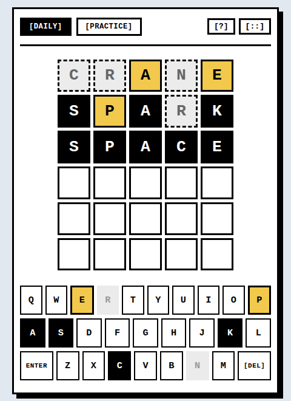
Brutalist Monospace (Default)
brutalistTerminale ad alto contrasto B&W, Safety Amber, bordi spessi e ombra 90°
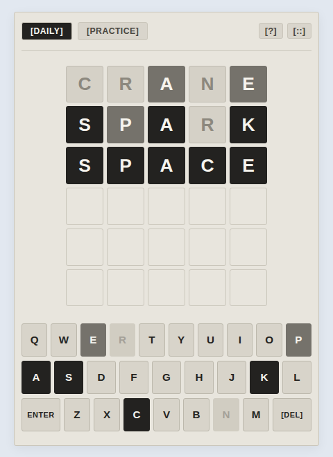
E-Ink / Paperwhite
einkSchermo Kindle a 16 livelli di grigio opaco per zero affaticamento visivo
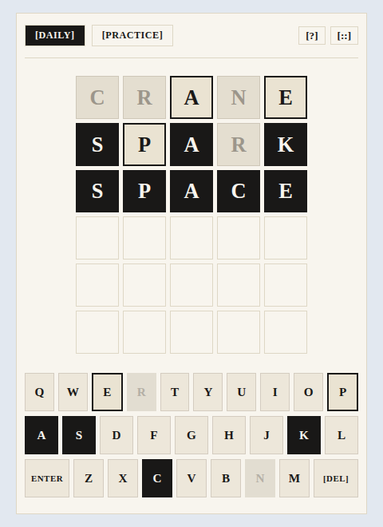
Tipografia & Inchiostro
editorialCruciverba d’altri tempi su carta avorio vergata e inchiostro nero piombo
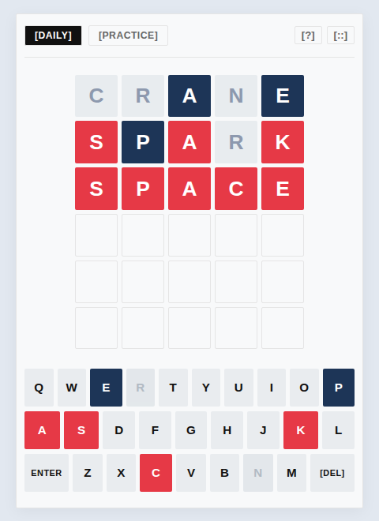
Swiss International Style
swissModernismo svizzero 1957, rigore geometrico, grigio ghiaccio e colori primari
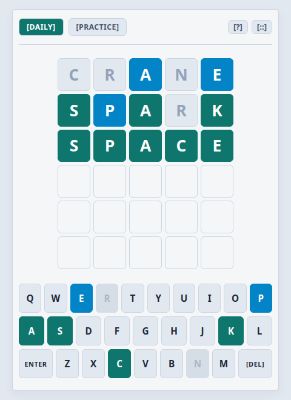
Nordic Minimal
nordicEstetica scandinava essenziale con verde pino boreale e blu fiordo profondo
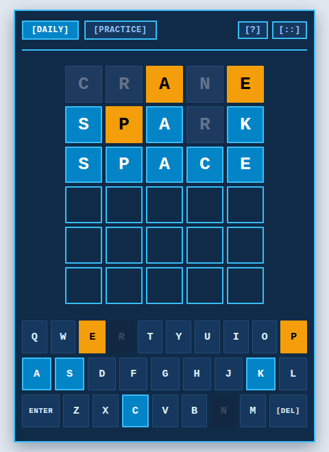
Architectural Blueprint
blueprintCianografia tecnica da disegno CAD, blu scuro navale e linee millimetriche ciano
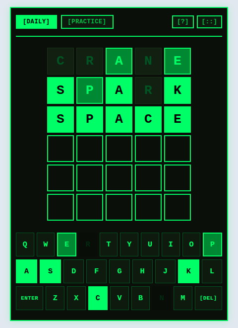
Matrix Terminal
matrixFosfori verdi CRT su sfondo nero abisso, estetica cyberpunk da console Unix
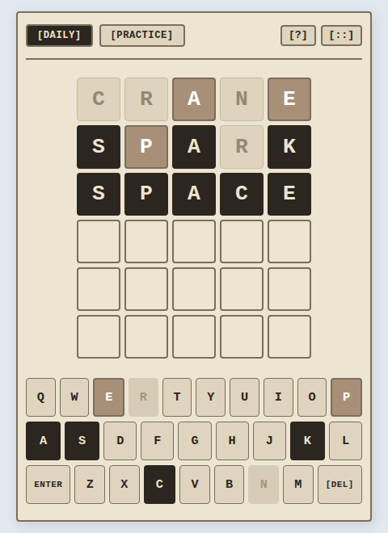
Antique Typewriter
typewriterTasti meccanici pesanti stile macchina da scrivere e nastro inchiostrato seppia
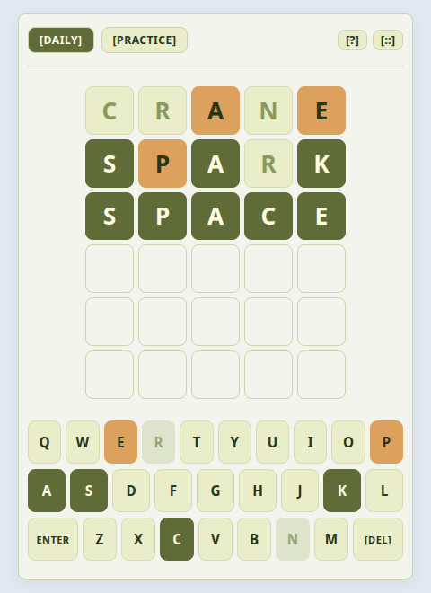
Matcha Zen
matchaArmonia naturale ispirata al tè matcha, bambù e toni organici della terra
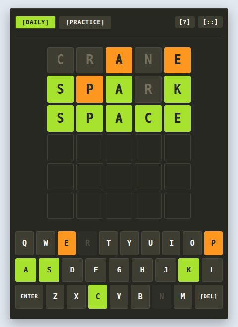
Monokai Pro
monokaiIl leggendario tema dark per programmatori con verde menta e arancio solare
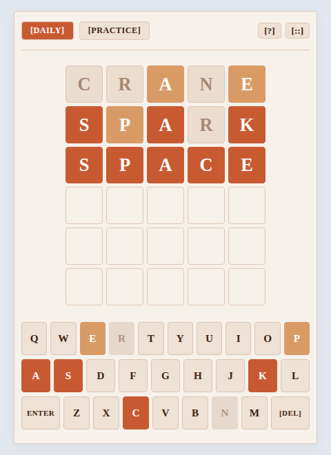
Terracotta & Clay
terracottaCeramiche mediterranee, argilla cotta al sole e calda polvere di mattone
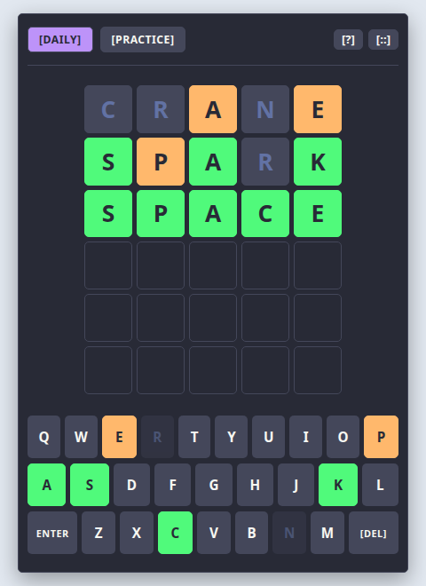
Dracula Gothic
draculaDark mode gotica con sfondo ardesia violaceo, verde elettrico e arancio caldo
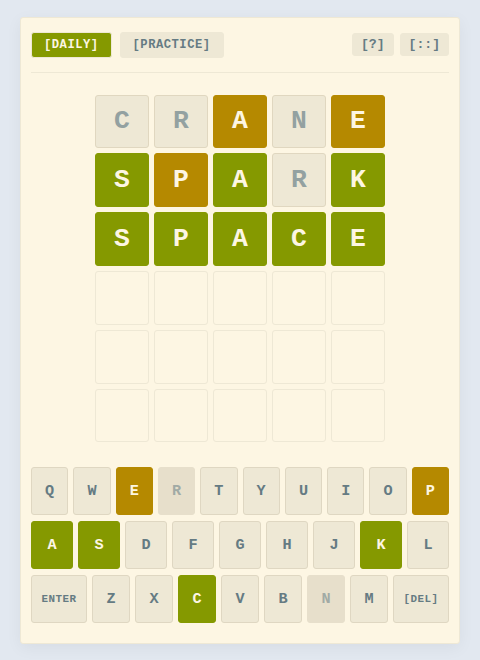
Solarized Light
solarized-lightPalette scientifica bilanciata di Ethan Schoonover, crema e giallo ocra d’archivio
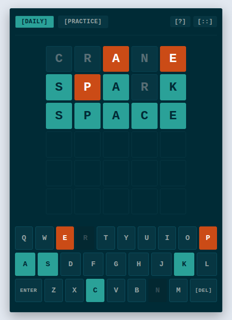
Solarized Dark
solarized-darkIl classico solarized notturno per terminali con fondo petrolio e ciano puro
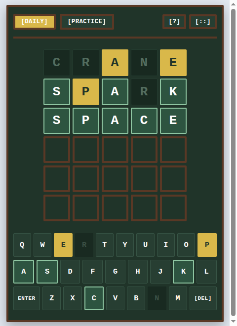
Vintage Chalkboard
chalkboardLavagna scolastica in ardesia scura, polvere di gesso bianco e tocchi di legno
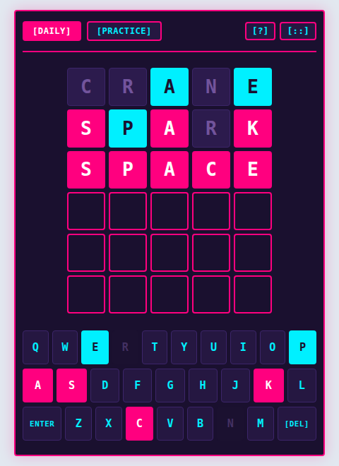
Synthwave 80s
synthwaveRetrofuturismo arcade anni 80 con griglie al neon magenta e ciano laser
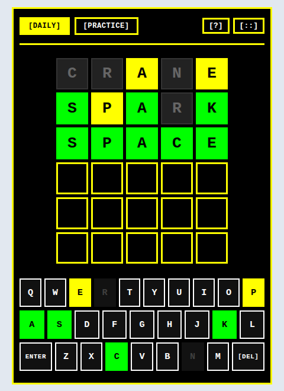
Teletext / Ceefax
teletextLa grafica televisiva a blocchi degli anni ’80, nero assoluto e primari puri
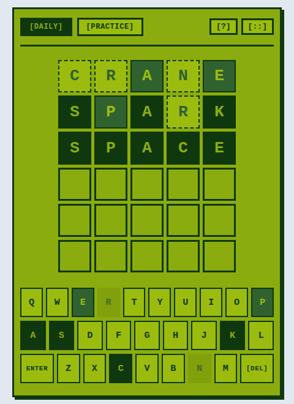
Game Boy 1989
gameboyL’originale schermo monocromatico DMG a matrice di punti in 4 toni di verde
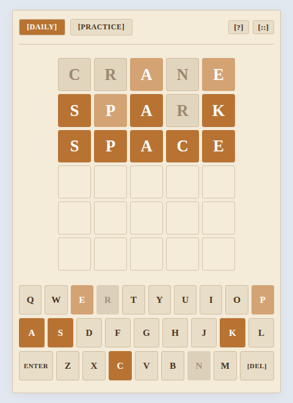
Sahara Dune
desertSabbie dorate del deserto, ocra e tonalità calde di arenaria e lino naturale
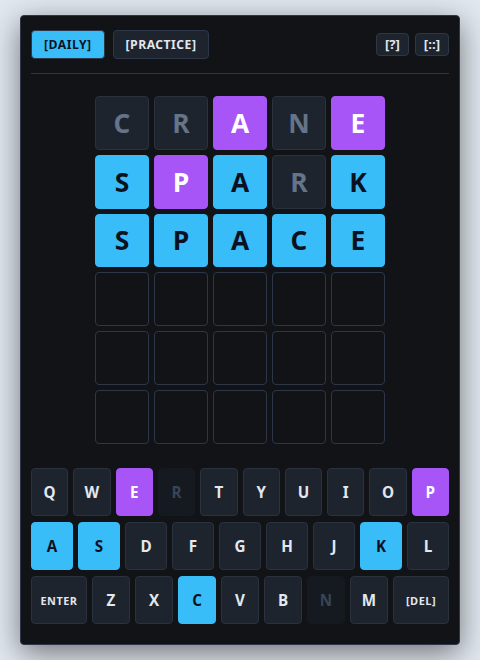
Midnight Slate
midnight-slateTitanio notturno e grafite scurissima con contrasti precisi in argento e blu cielo
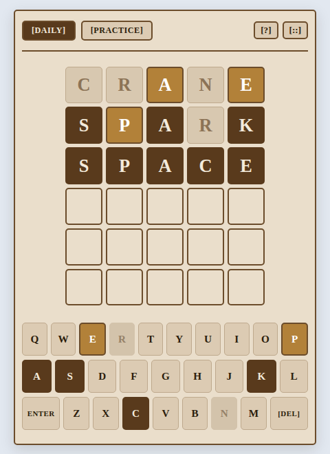
Leather Journal
leatherDiario da viaggio in cuoio brunito, caratteri impressi a caldo e fogli antichi
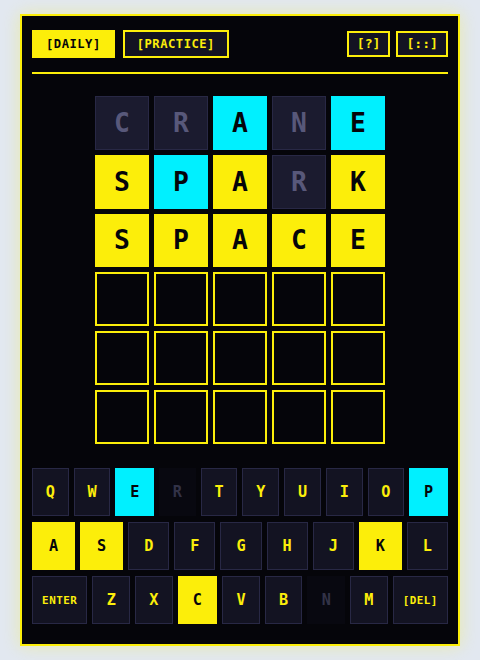
Cyberpunk Night City
cyberpunkHigh-tech low-life: giallo acido di Night City, ciano neon glitch e contrasto nero
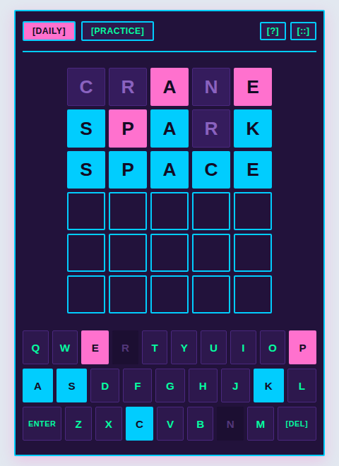
Vaporwave 1995
vaporwaveNostalgia Windows 95, statue greche, tramonti al neon rosa pastello e ciano lilla
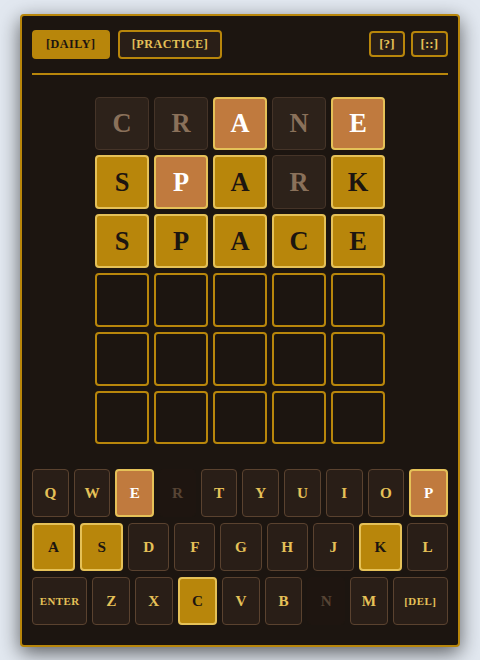
Victorian Steampunk
steampunkIngranaggi di rame lucido, manometri a vapore e ottone brunito dell’era vittoriana
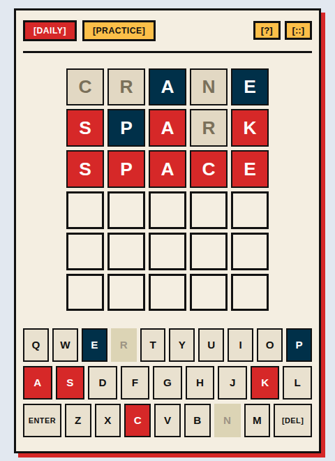
Bauhaus Weimar 1919
bauhausRigore modernista, forme pure e i tre colori primari di Kandinsky e Walter Gropius
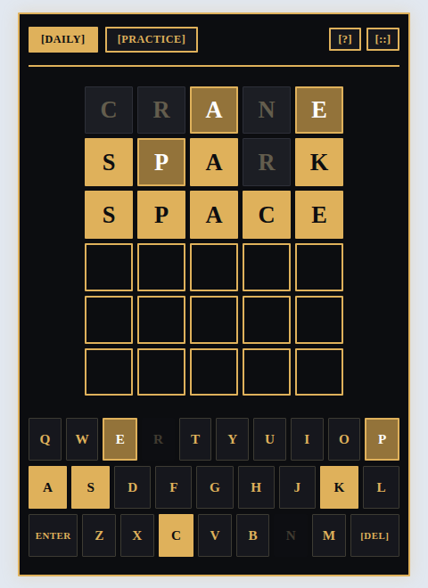
1920s Art Déco Gatsby
art-decoGrand Gatsby ruggenti anni ’20: nero ossidiana lucido e filigrana in oro zecchino
Amber Phosphor CRT
amber-crtI leggendari monitor a fosfori ambra arancioni DEC VT220 degli anni ’80
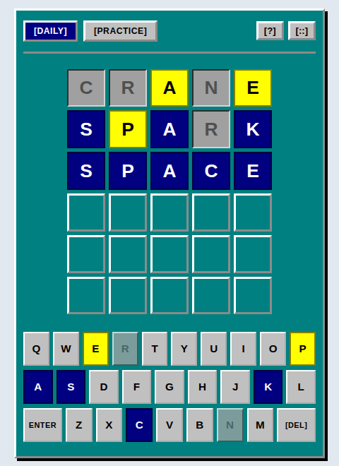
Windows 95 Redmond
win95L’inconfondibile desktop verde acqua #008080 con finestre beveled grigie a rilievo
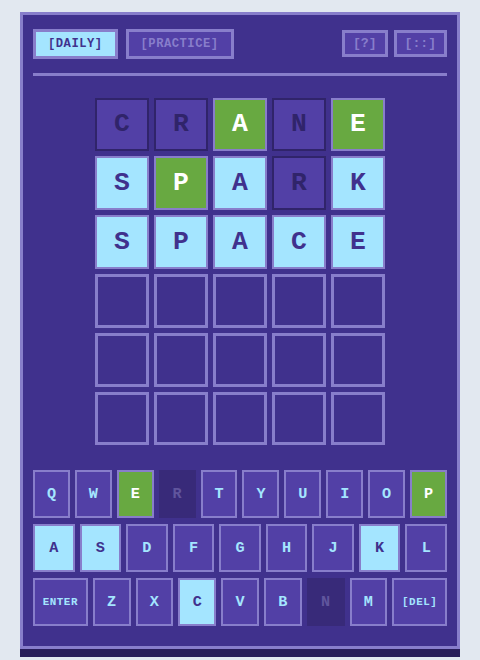
Commodore 64 1982
commodore64Bordo blu royal, schermata azzurra PETSCII e 64K di memoria RAM indimenticabile
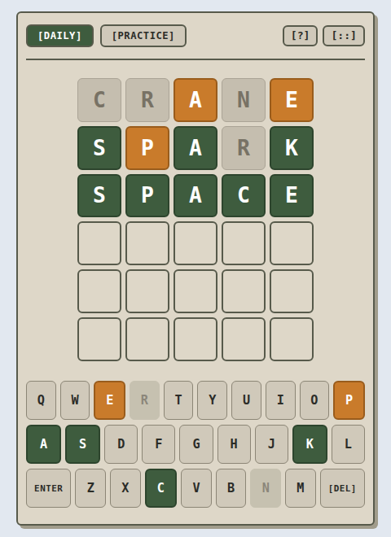
Cassette Futurism
cassette-futurismStile Nostromo 1979 e NASA: plastica beige opaca, tasti gommati e hardware tattile
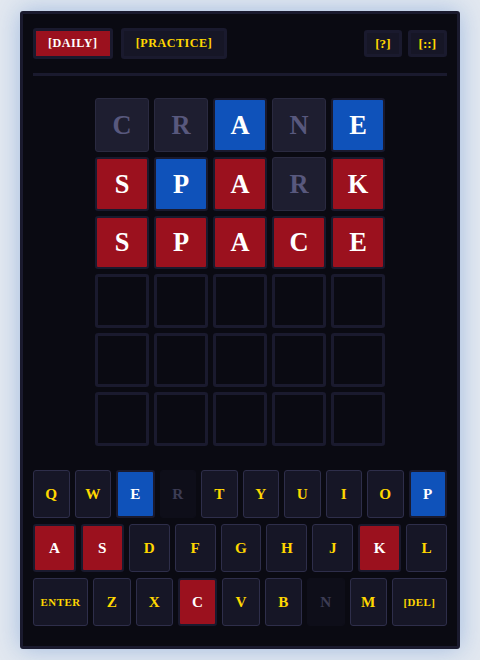
Gothic Stained Glass
stained-glassVetrata policroma di cattedrale gotica con toni rubino, zaffiro e saldature in piombo
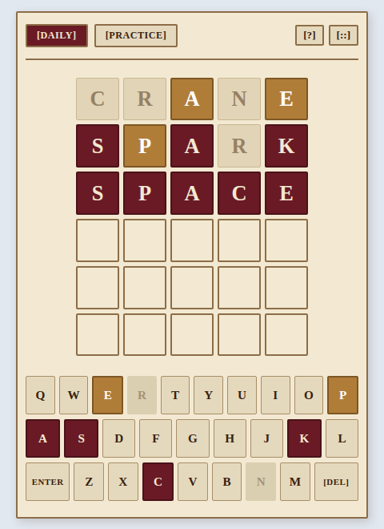
Medieval Parchment
parchmentManoscritto miniato del XIII secolo: pergamena vellutata e inchiostri amanuensi
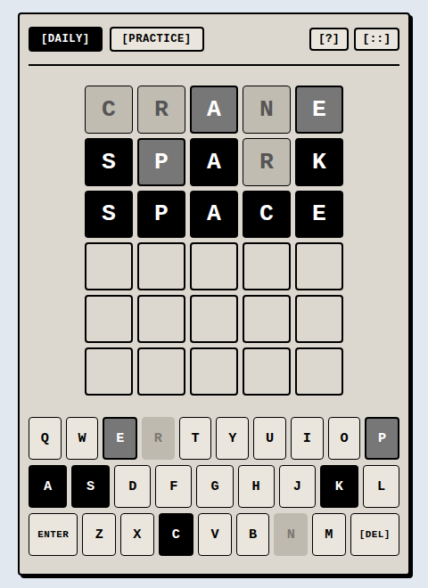
Classic Mac OS 1984
retro-macSystem 7 e Macintosh originale: grigio platino, bordi netti e bitmap font Chicago
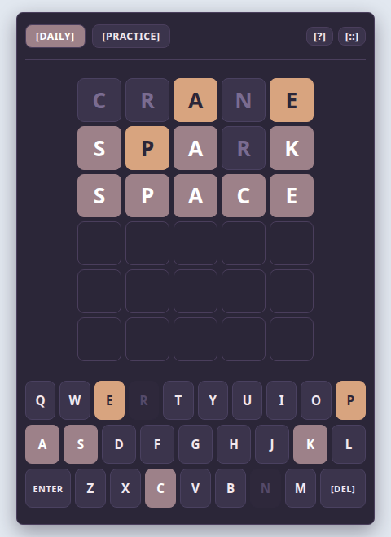
Lo-Fi Study Room
lofi-chillAtmosfera studio notturna: caffè caldo, cuffie, lilla polveroso e lampada da tavolo
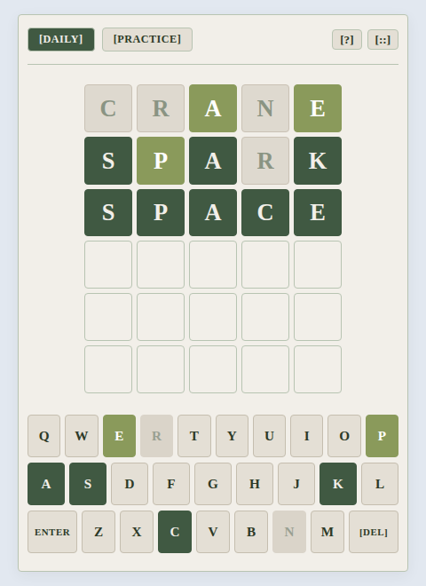
Vintage Botanical
botanicalErbario scientifico ottocentesco con salvia essiccata, felci e carta di cotone
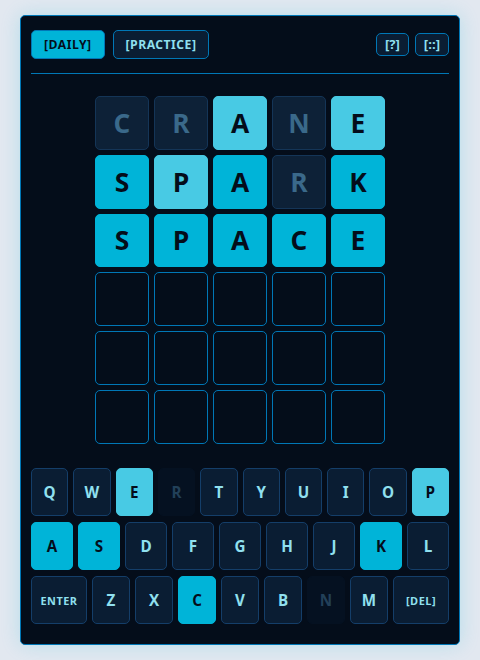
Abyssal Deep Ocean
deep-oceanFossa delle Marianne: blu marino abissale e bioluminescenza turchese idrotermale
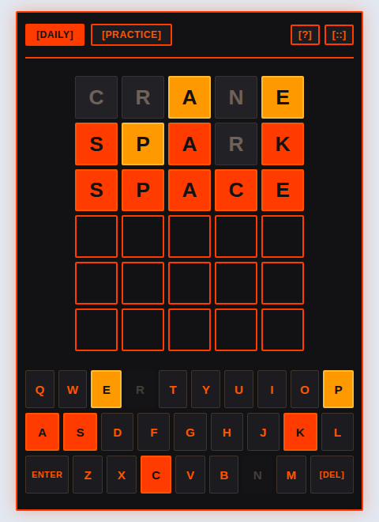
Volcanic Obsidian
volcanicOssidiana nera basaltica e vene incandescenti di lava vulcanica in eruzione
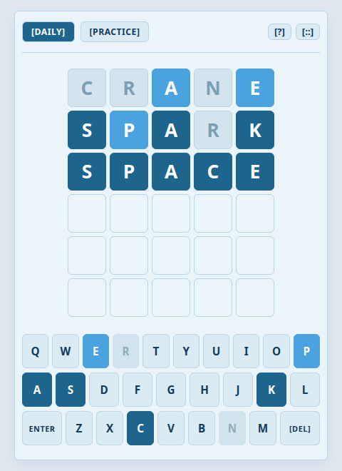
Arctic Glacial Ice
arcticGhiacciai polari, riflessi azzurri di iceberg millenari e gelo cristallino
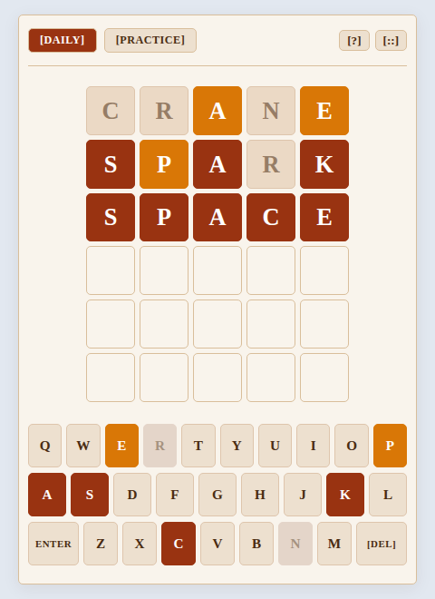
Autumn Leaves
autumnFogliame autunnale, caldarroste, sciroppo d’acero rosso e zucca speziata
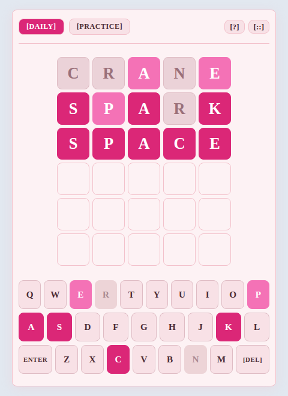
Kyoto Sakura
cherry-blossomFioritura dei ciliegi primaverile a Kyoto: petali rosa soffice e inchiostro sumi
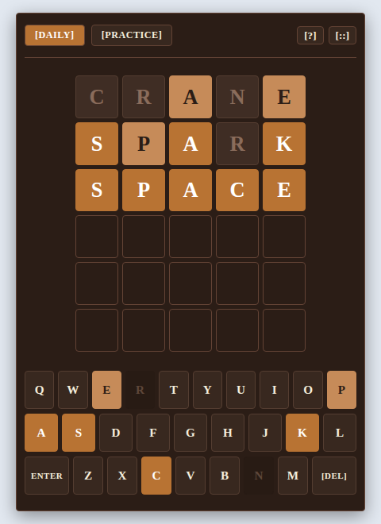
Artisan Coffee Roastery
coffee-roastEspresso napoletano crema nocciola, arabica tostata scura e vapore di latte caldo
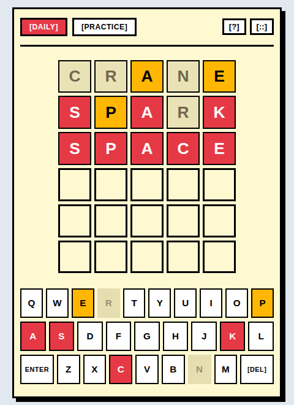
Pop Art Comic Book
comic-bookStile Roy Lichtenstein e fumetti americani anni ’60: giallo splash e onomatopee
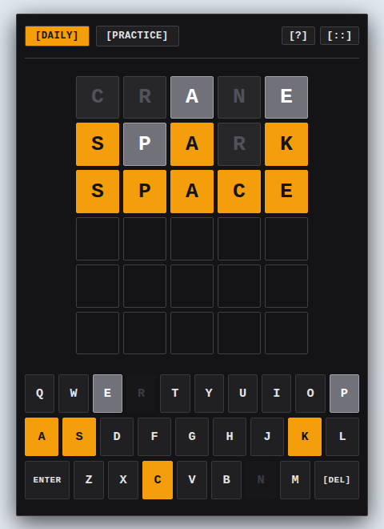
Neo-Noir Detective
neo-noirAsfalto bagnato sotto i lampioni alogeni, fumo di sigaretta e impercettibile pioggia
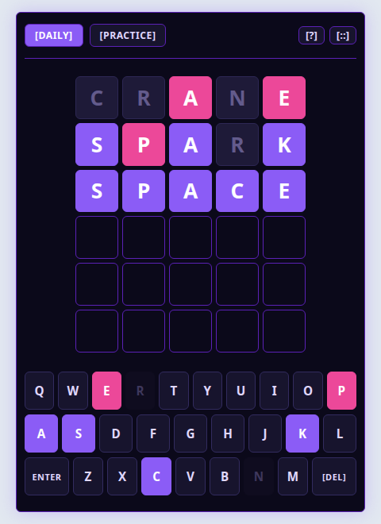
Cosmic Nebula
galaxySpazio profondo: nebulosa viola, polvere di stelle magenta e lampo supernova
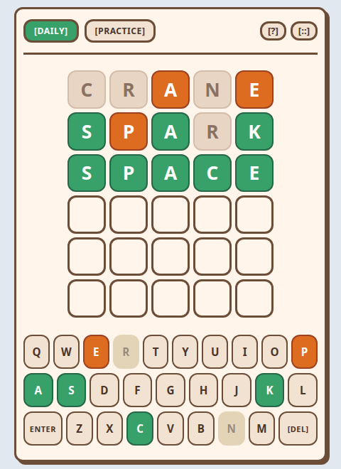
Claymation Studio
claymationPlastilina artigianale modellata a mano in stop-motion con angoli morbidissimi
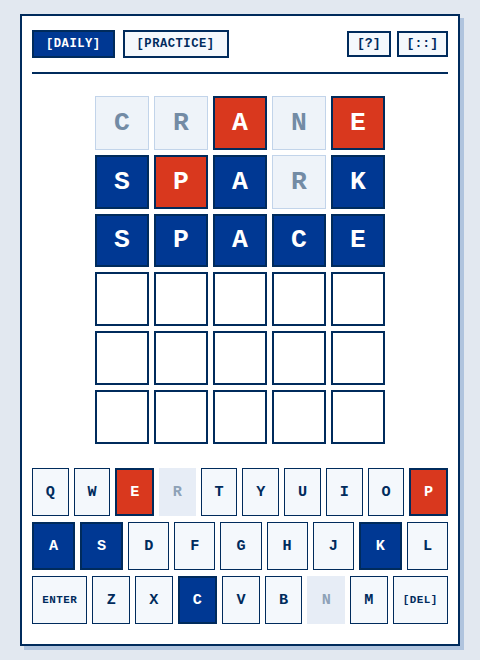
Millimeter Graph Paper
graph-paperQuaderno di matematica con reticolo millimetrato blu e inchiostro stilografico
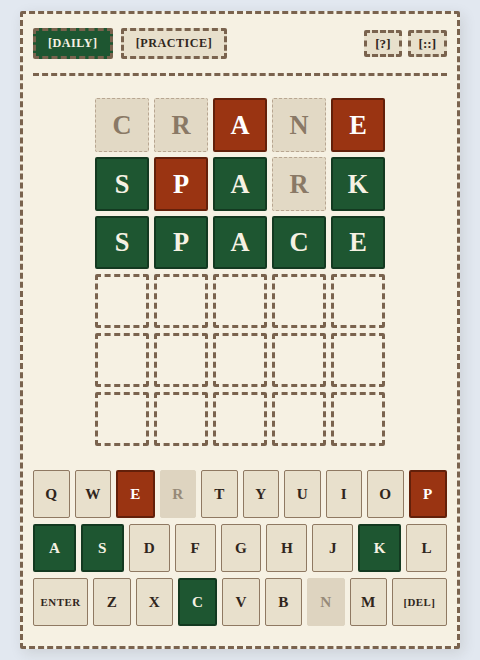
Vintage Postage Stamp
postage-stampCollezione filatelica d’epoca: bordi traforati da francobollo e inchiostri postali
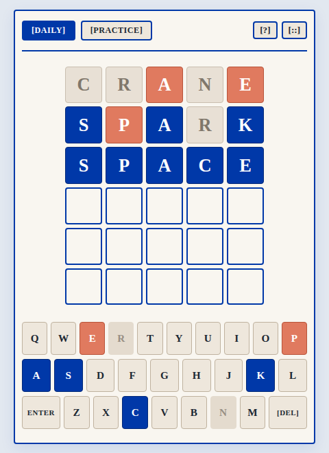
Moroccan Zellij
moroccanMosaico geometrico arabo-andaluso: blu cobalto di Fez, zellij e terracotta smaltata
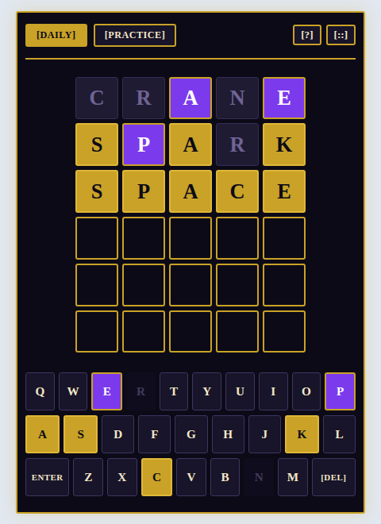
Mystic Tarot
tarotCarte dei tarocchi esoteriche: velluto nero mezzanotte e lamina dorata celestiale
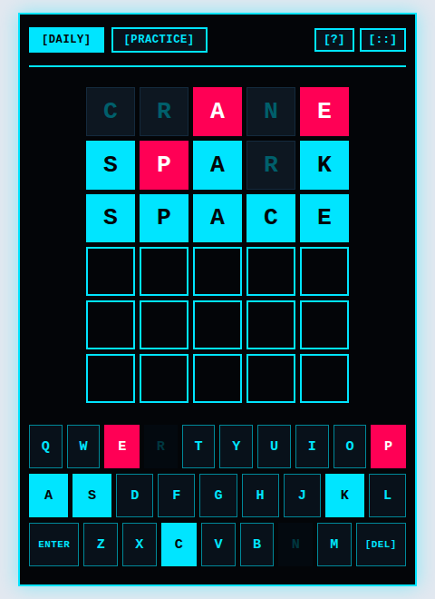
Tron Vector Wireframe
wireframeGrafica vettoriale arcade 1982: linee laser al ciano elettrico nel vuoto nero
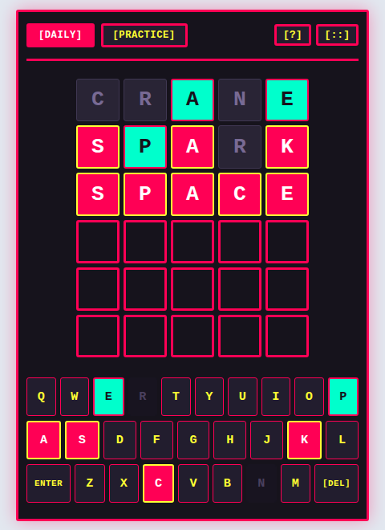
Coin-Op Arcade 1984
arcade-cabinetMobile arcade da sala giochi anni ’80: gettoniera nera, marquee e neon lampone
Broadsheet Daily
newspaperQuotidiano stampato del mattino: grigio carta di giornale e inchiostro rotativa
Neon Tokyo Rain
neon-tokyoShinjuku sotto la pioggia battente: riflessi asfalto scuro e insegne kanji al neon
Radium Dial 1930
radiumOrologio militare vintage con quadrante al radio luminescente e numeri verde brillante
Washi Origami
origamiCarta giapponese washi a fibra naturale, pieghe nette a losanga e lacca vermiglia
Maritime Morse 1844
morse-telegraphApparato telegrafico da nave: bachelite nera, tasto in ottone massiccio e impulsi radio
Solar Flare Infrared
solar-flareTelescopio James Webb: plasma solare dorato, brillamenti coronali ed eruzioni solari
VHS Tape Glitch
glitchNastro magnetico VHS logorato: tracciamento video fuori asse, ciano e aberrazione cromatica
Vintage Polaroid SX-70
polaroidPellicola fotografica istantanea: classica cornice bianca Polaroid e toni desaturati
Royal Baroque & Velvet
baroqueLusso regale di Versailles: velluto bordeaux imperiale, oro lucido e cornici dorate